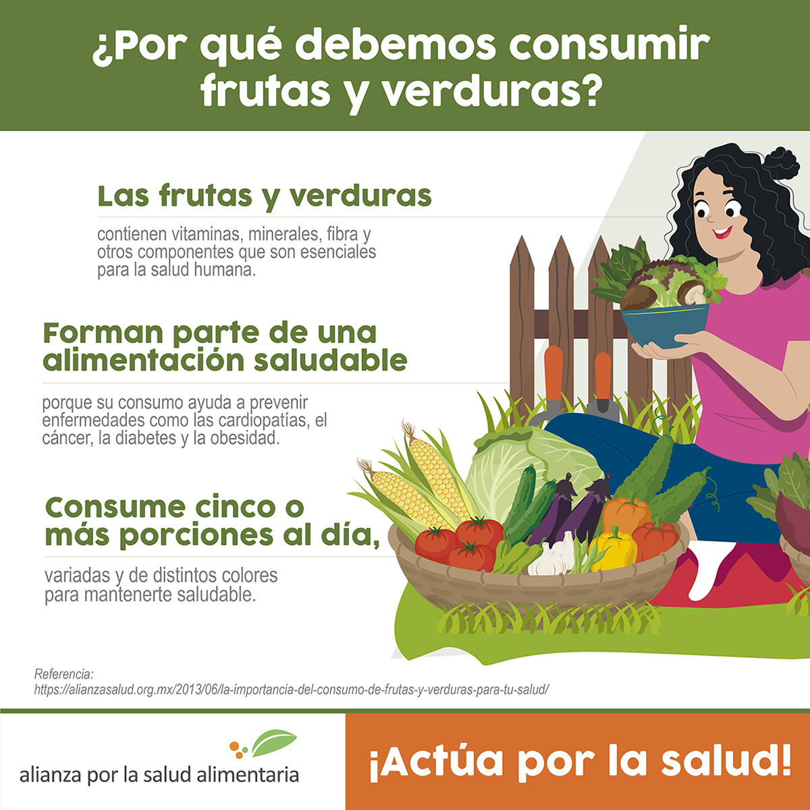

Tienda de productos vegetales
Acerda de productos
Las vitaminas, los minerales y otros componentes de las frutas y las verduras son esenciales para la salud humana.
La fibra, por ejemplo, contribuye al tránsito a través del aparato digestivo y a reducir los niveles de colesterol en la sangre.
Las vitaminas y minerales ayudan a mantener un adecuado estado de salud y los fitoquímicos, como los compuestos que dan a los tomates y las zanahorias sus vivos colores, tienen efectos antioxidantes y antiinflamatorios.
Además, estos productos naturales favorecen una adecuada digestión de otros nutrientes, aumentan el volumen intestinal, lo que ayuda a regular el apetito y suelen implicar una mayor seguridad de los alimentos, tanto los frescos como los preparados.
Actúa: Consume 5 o más porciones de frutas y verduras al día. Por ejemplo, una manzana durante el desayuno, jícama en la colación, jitomate como parte del guisado en la comida, guayaba como postre y nopal como parte de tu cena.

Productos disponibles